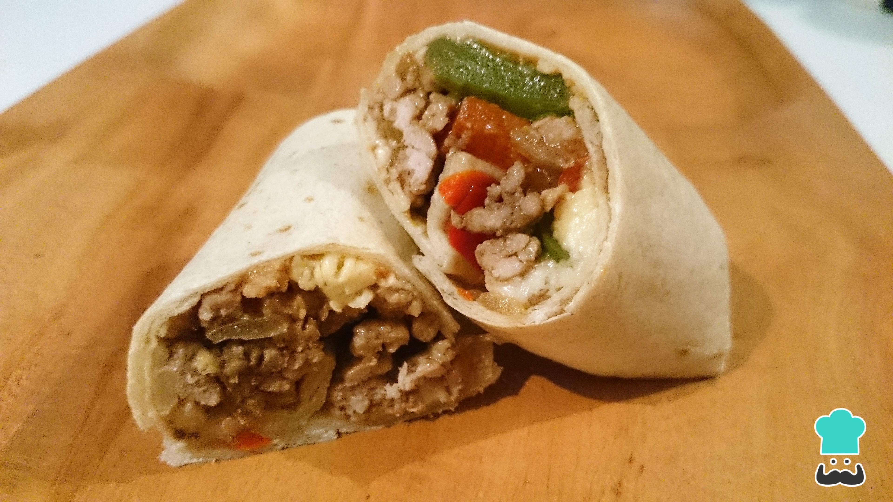

Tacos de ternera

El mexicano en casa
Una receta sencilla y muy nutritiva, se hace muy rápidamente y está buenísima
Ingredientes
- Carne picada
- Aguacate
- Queso rallado
Pasos
- Frie la carne
- Echa la salsa de tomate y mezcla
- Caliente el pan, añade los ingredientes y sirve